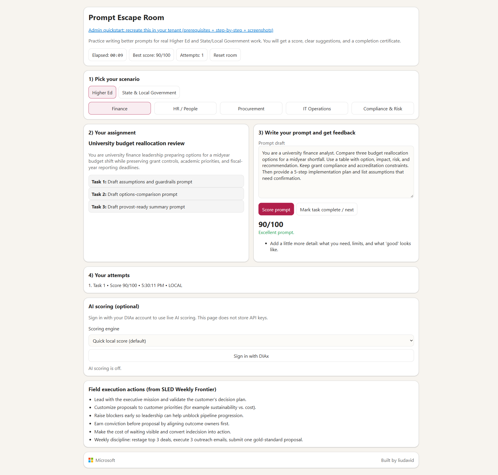
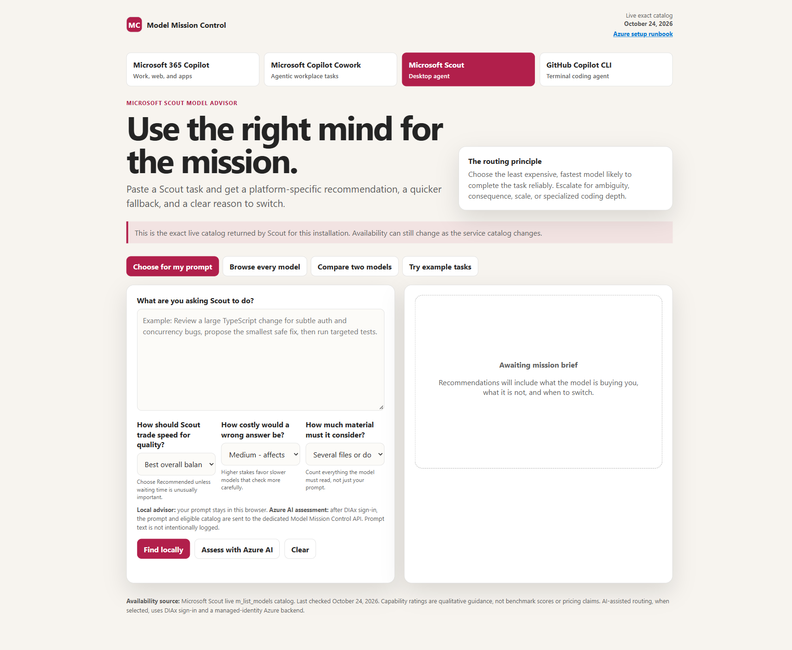

Updated Oct 27, 2026
Prompt Quest
Complete real-world challenges. Build better prompts.
model-mission-control/ and model-mission-control-api/ in this Prompt Quest deployment.See the end result first
This is the experience you are deploying: scenario selection, prompt submission, AI-style scoring, and completion flow.

Prerequisites and access
- Azure subscription access for target resource group.
- Permission to create App registrations in Microsoft Entra ID.
- Permission to create role assignments (
Microsoft.Authorization/roleAssignments/write) for IAM step. - GitHub repository where you can publish static files via GitHub Pages (or equivalent HTTPS host).
- Azure CLI + Node.js 22 + npm on workstation.
- A tenant admin or delegated admin available to grant API permissions consent.
Node.js 24 is also supported on current Functions plans. Use 22 or 24 consistently across your build and deployment tooling.
Terms used in this guide: AOAI = Azure OpenAI resource. Microsoft Foundry scoring here means the app calling your AOAI model deployment through the Function API.
Cloud applicability
- Microsoft Entra ID: registration and consent steps are the same for commercial and GCC-Moderate tenants.
- Azure resources: this guide and Deploy button target the commercial Azure portal and endpoints.
- Azure Government: use
portal.azure.usand verify authority host, token audience, and AOAI endpoint/domain differences before deploying.
Configuration worksheet (fill before setup)
| Value | Example | Where to get it | Where to set it |
|---|---|---|---|
| Tenant ID | <tenant-guid> | Entra ID overview | DIAx_AI.tenantId, ENTRA_TENANT_ID |
| API app client ID | <api-app-guid> | API app registration overview | ENTRA_API_CLIENT_ID, scope URI |
| SPA app client ID | <spa-app-guid> | SPA app registration overview | DIAx_AI.clientId |
| Scope URI | api://<api-client-id>/access_as_user | API app > Expose an API | DIAx_AI.scope |
| Function API URL | https://<func>.azurewebsites.net/api/escape-score | Function app name | DIAx_AI.apiUrl |
| Redirect URI (prod) | https://<user>.github.io/<repo>/promptquest/ | GitHub Pages URL | SPA app Authentication + DIAx_AI.redirectUri |
| Allowed origin | https://<user>.github.io | Your site origin | ALLOWED_ORIGINS |
| Allowed user object ID | <entra-user-object-id> | az ad signed-in-user show --query id -o tsv | ALLOWED_USER_OBJECT_ID |
| AOAI endpoint | https://<aoai>.openai.azure.com/ | AOAI resource overview | ESCAPE_AOAI_ENDPOINT |
| AOAI deployment | prompt-score-gpt41mini | AOAI model deployments | ESCAPE_AOAI_DEPLOYMENT |
Admin missions (deployment path)
Mission 1. Deploy the frontend gateway
- Get the Prompt Quest sample source (either clone or download zip), then copy it into your publishing repository.
- Confirm these paths are present:
prompt-engineering-public/promptquest/model-mission-control-api/model-mission-control/vendor/msal-browser.min.js
- Commit and publish your updated site repository to GitHub Pages.
# 1) Get sample source
git clone https://github.com/ganymededl/liudavid_od4b_root.git
# 2) Copy required folders into your own site repo
# prompt-engineering-public/
# promptquest/
# model-mission-control-api/
# 3) Commit in your site repo and publish
git add .
git commit -m "Add Prompt Quest sample"
git push origin mainIf your Pages source is branch/folder based, configure that in repository settings before testing URLs.

Mission 2. Register the API identity (Entra)
- Portal → Microsoft Entra ID → App registrations → New registration.
- Name it
promptquest-api(or your naming standard). - Use single tenant.
- Register, then open Expose an API.
- Set Application ID URI to
api://<api-client-id>. - Add scope:
- Name:
access_as_user - Who can consent: Admins and users
- Display text: allow frontend to call scoring API
- Name:
access_as_user before configuring SPA permissions.Mission 3. Register the web client identity (Entra)
- Create another app registration:
promptquest-spa. - Open Authentication → Add a platform → Single-page application.
- Add redirect URIs exactly:
https://<your-gh-user>.github.io/<your-repo>/promptquest/
http://localhost:8765/promptquest/Dev-only URI: keep localhost:8765 only for local testing. Remove it for production-only registrations if your security standard requires that.
- Open API permissions → Add a permission → My APIs → choose API app.
- Select delegated
access_as_user. - Grant admin consent.
access_as_userMission 4. Provision Azure infrastructure
# Replace with your values
$RG = "rg-promptquest-eastus2"
$LOCATION = "eastus2"
$STORAGE = "stpromptroom12345"
$PLAN = "plan-prompt-room"
$FUNC = "func-prompt-room-12345"
$AOAI = "aoai-prompt-room-12345"
$DEPLOYMENT = "prompt-score-gpt41mini"
az group create --name $RG --location $LOCATION
az storage account create `
--name $STORAGE `
--resource-group $RG `
--location $LOCATION `
--sku Standard_LRS
az functionapp plan create `
--name $PLAN `
--resource-group $RG `
--location $LOCATION `
--sku B1 `
--is-linux
az functionapp create `
--name $FUNC `
--resource-group $RG `
--plan $PLAN `
--storage-account $STORAGE `
--runtime node `
--runtime-version 22
az cognitiveservices account create `
--name $AOAI `
--resource-group $RG `
--location $LOCATION `
--kind OpenAI `
--sku S0 `
--custom-domain $AOAIIf your standards require Consumption plan on Windows, use this variant:
az storage account create --name $STORAGE --resource-group $RG --location $LOCATION --sku Standard_LRS
az functionapp create --name $FUNC --resource-group $RG --storage-account $STORAGE --consumption-plan-location $LOCATION --os-type Windows --runtime node --runtime-version 22Deploy button scope: this template provisions storage + hosting plan + Function App + AOAI account only. You still must complete Missions 5-9 for deployment, identity role assignment, CORS, and app settings.
Storage policy note: the template sets AzureWebJobsStorage using a storage account key. If your policy blocks shared-key access, use manual provisioning and your approved Functions storage pattern instead of this template.
If your organization uses a different hosting SKU or region policy, adjust accordingly.
Mission 5. Awaken the model engine (AOAI deployment)
az cognitiveservices account deployment create `
--resource-group $RG `
--name $AOAI `
--deployment-name $DEPLOYMENT `
--model-format OpenAI `
--model-name gpt-4.1-mini `
--model-version 2025-04-14 `
--sku-name GlobalStandard `
--sku-capacity 10Use your approved model/version if different, and confirm regional availability + quota first. Keep deployment name, because you will reuse it in app settings.
# Check what your subscription can deploy in this region
az cognitiveservices account list-models `
--name $AOAI `
--resource-group $RG `
--query "[?contains(name, 'gpt-4.1') || contains(name, 'gpt-4o') || contains(name, 'gpt-5')].{name:name,version:version,lifecycle:lifecycleStatus,retireInference:deprecation.inference}" -o tableIf your subscription cannot deploy the default model version, choose a currently deployable model from your list-models output and keep $DEPLOYMENT aligned with that choice.
ESCAPE_AOAI_DEPLOYMENT.Mission 6. Publish the scoring API
cd model-mission-control-api
npm ci
npm test
# Publish API code (recommended path)
func azure functionapp publish $FUNCAfter deploy, verify the app starts and triggers are synced.
Mission 7. Configure API runtime and CORS
$TENANT = "<tenant-id>"
$API_CLIENT = "<api-app-client-id>"
$ALLOWED_USER = az ad signed-in-user show --query id -o tsv
$ORIGIN = "https://<your-gh-user>.github.io"
$AOAI_ENDPOINT = az cognitiveservices account show `
--resource-group $RG `
--name $AOAI `
--query properties.endpoint -o tsv
az functionapp config appsettings set `
--resource-group $RG `
--name $FUNC `
--settings `
ENTRA_TENANT_ID=$TENANT `
ENTRA_API_CLIENT_ID=$API_CLIENT `
ALLOWED_USER_OBJECT_ID=$ALLOWED_USER `
ALLOWED_ORIGINS=$ORIGIN `
ESCAPE_AOAI_ENDPOINT=$AOAI_ENDPOINT `
ESCAPE_AOAI_DEPLOYMENT=$DEPLOYMENT# Platform-level CORS (required for browser preflight)
az functionapp cors add `
--resource-group $RG `
--name $FUNC `
--allowed-origins $ORIGINUse the endpoint returned by Azure CLI exactly as-is. Some OpenAI resources include a generated suffix (for example -91f5d), so do not hand-build the endpoint URL.
Portal path: Function App > API > CORS. Add your GitHub Pages origin. If your security policy requires it, enable Access-Control-Allow-Credentials.
ALLOWED_ORIGINS = exact site originALLOWED_ORIGINS and platform CORS allow list, or browser requests will fail.Mission 8. Grant managed identity access
az functionapp identity assign `
--resource-group $RG `
--name $FUNC
$PRINCIPAL_ID = az functionapp identity show `
--resource-group $RG `
--name $FUNC `
--query principalId -o tsv
$AOAI_ID = az cognitiveservices account show `
--resource-group $RG `
--name $AOAI `
--query id -o tsv
az role assignment create `
--assignee-object-id $PRINCIPAL_ID `
--assignee-principal-type ServicePrincipal `
--role "Cognitive Services OpenAI User" `
--scope $AOAI_IDMission 9. Wire frontend to your tenant
In promptquest/index.html, update the DIAx_AI object:
tenantId: "<your-tenant-id>",
clientId: "<your-spa-client-id>",
scope: "api://<your-api-client-id>/access_as_user",
apiUrl: "https://<your-function-app>.azurewebsites.net/api/escape-score",
redirectUri: "https://<your-gh-user>.github.io/<your-repo>/promptquest/"Commit and push these changes so they publish to your site.
api://<api-client-id>/access_as_userMission 10. Author your Prompt Quest content
Admins can customize the room itself in promptquest/index.html:
- Scenarios and roles: update
roleCatalogByModefor HE, SLG, and Medical Centers. - Assignment text and tasks: edit each role's
assignmentTitle,assignmentText, andtasks. - Local rubric behavior: adjust
evaluatePromptLocal()thresholds and feedback. - Pass/fail language: labels returned in local and Foundry paths.
- Certificate text: update completion wording in certificate section.
This is the section that lets admins create their own room, not only copy your existing one.

Mission 11. Final validation and launch
Run this checklist before sharing with users:
- Public page opens and room loads.
- Local scoring works and records attempt history.
- Foundry scoring sign-in works and returns feedback.
- While on Task 2 or Task 3, sign-in redirect returns to the same task with the draft preserved.
- Unauthorized user is rejected (403 expected).
- Task progression and reset room controls work.
- After quest completion, scoring controls are disabled and no additional (Task 4) attempt can be created.
- During a deliberately delayed AI score call, changing scenario/role is blocked so the result cannot attach to the wrong task.
- Completion certificate renders and prints.
- Participant notice is visible: live AI scoring sends prompt text to your Azure AI endpoint.
Reference sign-in pattern
This implementation follows the same Microsoft Entra browser sign-in pattern used in Model Mission Control.

Multi-user deployment guidance
Current sample is implemented as a single-user gate via ALLOWED_USER_OBJECT_ID.
The options below are design directions for future enhancement, not configuration-only switches in this sample build:
- Allowed security group IDs from token claims.
- Allowed app roles.
- Tenant-wide access with explicit abuse controls and monitoring.
Do not remove authorization checks without implementing and testing one supported multi-user authorization model in API code.
Governance and data-handling notes
- Training guidance: keep learner inputs synthetic. Do not enter PHI, CJIS, FERPA-protected student records, or production case identifiers unless your deployment has explicit approval.
- Data flow: browser prompt text is posted to Function API, then forwarded to your Azure OpenAI deployment for scoring.
- Regulatory review: confirm your tenant policy for retention, abuse monitoring, residency, and logging before enabling live AI scoring.
- Security hardening baseline: review private endpoint options, disable local auth where allowed, and send diagnostics to Log Analytics.
Troubleshooting
- AADSTS50011: redirect URI mismatch. Add exact URI with trailing slash to SPA app registration.
- WAM 700003: local device account issue. Use browser sign-in (InPrivate) and re-register work account on device.
- 403 origin_not_allowed: origin not in
ALLOWED_ORIGINS. - 403 forbidden: token valid but user not authorized by API logic.
- 502 foundry_request_failed: model deployment name mismatch or missing AOAI role assignment for Function identity.
- 404 on
/api/escape-score: function routes did not load after deployment. Run the recovery sequence below.
Recovery sequence for 404 function routes
# 1) Restart app service process
az functionapp restart `
--resource-group $RG `
--name $FUNC
# 2) Re-publish API code
cd model-mission-control-api
func azure functionapp publish $FUNC
# 3) Confirm functions are indexed
az functionapp function list `
--resource-group $RG `
--name $FUNC `
--query "[].name" -o tsv
# Expected names include:
# escape-score
# 4) Smoke test endpoint (401 is healthy before token auth)
curl.exe -i -X POST "https://$FUNC.azurewebsites.net/api/escape-score" -H "Origin: https://.github.io" -H "Authorization: Bearer fake" -H "Content-Type: application/json" --data "{}" Use this exact origin placeholder format when you copy the smoke test command: https://<your-gh-user>.github.io.
If step 4 still returns 404, re-check Mission 6 deployment output and Mission 7 app settings, then re-publish once more.